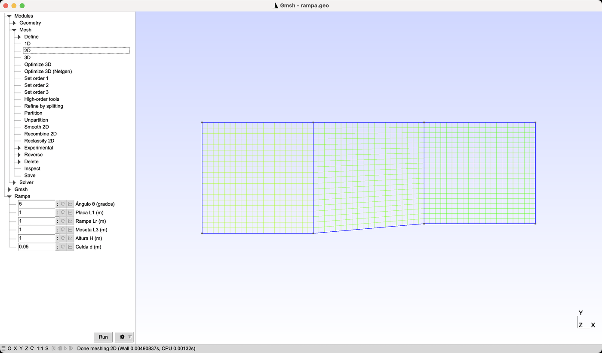
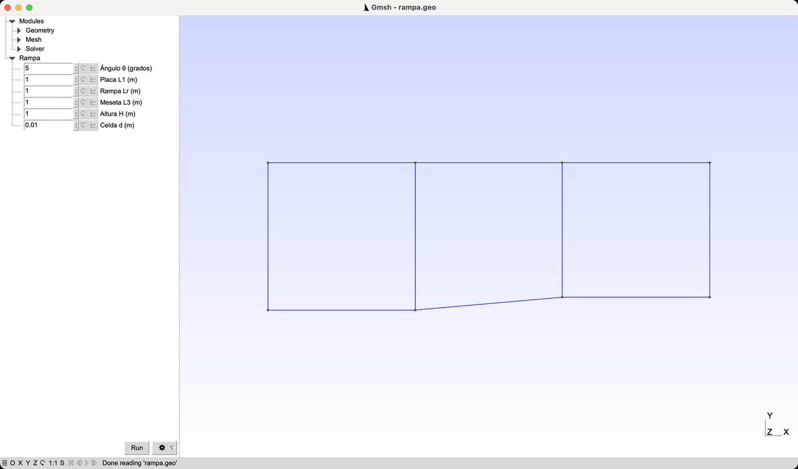
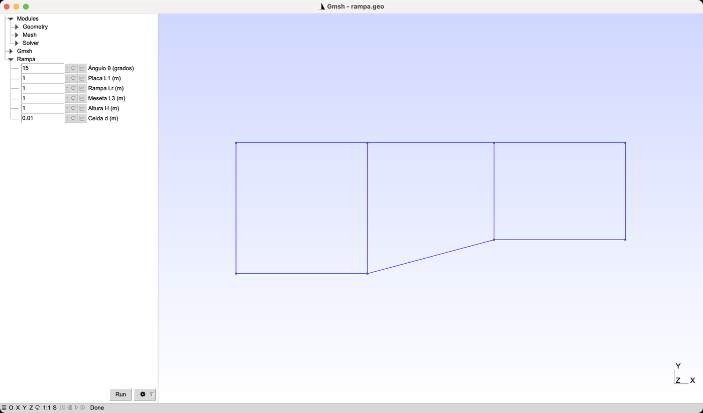
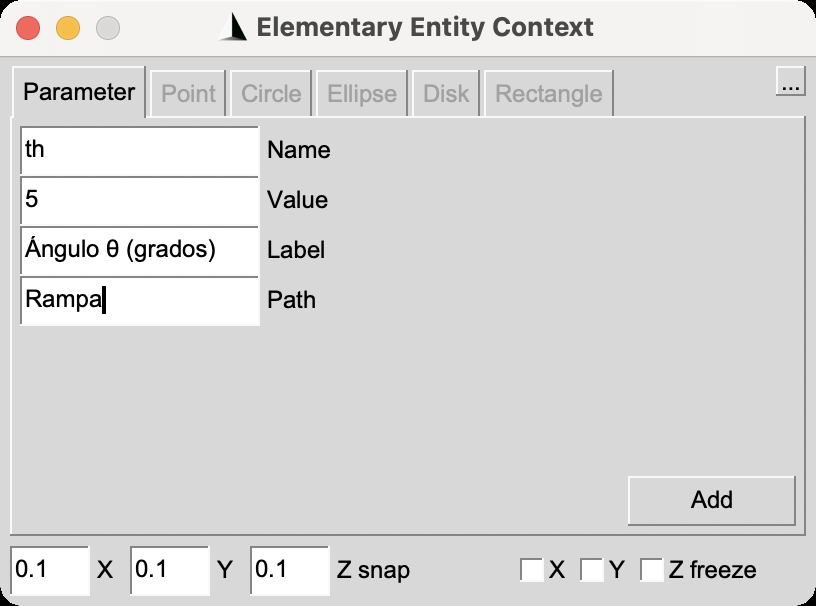
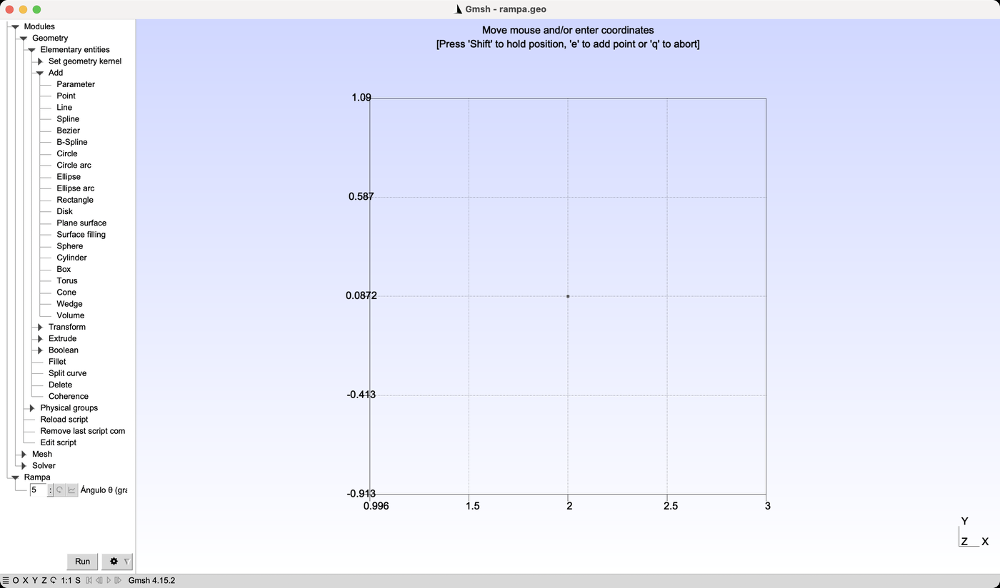

The Compression and Expansion Ramp: A Mesh for Shock Waves
Three structured blocks, six parameters and one rule: count the cells between the wall and the shock. The parameters appear as fields in the Gmsh window, and the mesh is the one used by the OpenFOAM tutorial on oblique shocks and Prandtl-Meyer fans.
Gmsh · Tutorial 2.1
La rampa de compresión y expansión: una malla para ondas de choque
Tres bloques estructurados, seis parámetros y una regla: contar las celdas que caben entre la pared y el choque. Los parámetros aparecen como campos en la ventana de Gmsh, y la malla es la que usa el tutorial de OpenFOAM sobre el choque oblicuo y el abanico de Prandtl-Meyer.
Gmsh · Tutorial 2.1
Die Kompressions- und Expansionsrampe: ein Netz für Stoßwellen
Drei strukturierte Blöcke, sechs Parameter und eine Regel: die Zellen zwischen Wand und Stoß zählen. Die Parameter erscheinen als Felder im Gmsh-Fenster, und das Netz ist das des OpenFOAM-Tutorials über den schiefen Stoß und den Prandtl-Meyer-Fächer.
Estimated reading: 35 minLectura estimada: 35 minLesedauer: ca. 35 minLevel: undergraduateNivel: licenciaturaNiveau: BachelorVerified on Gmsh 4.15.2 and OpenFOAM 13Verificado en Gmsh 4.15.2 y OpenFOAM 13Geprüft mit Gmsh 4.15.2 und OpenFOAM 13
Full English translation in preparation. Each section below carries a summary of its content; the complete text, figures and tables are available in the Spanish version, which the ES button above selects.
Build, by file and by interface, the structured mesh of a Mach 5 compression and expansion ramp: six parameters that appear as fields in the Gmsh window, three blocks with shared edges, square cells of side d, a one-cell extrusion and the physical groups that OpenFOAM expects.
The idea
Count the cells between the wall and the shock
The oblique shock leaves the compression corner at beta = 15.07 degrees. At the end of the ramp the layer between the wall and the shock is about 0.18 m thick, and the quality of the result depends on how many cells fit across it: three in a 3 m domain with 49 cells, nine with d = 0.02 m and thirty-six with d = 0.005 m.
Recipe
From the parameters to the .msh in eight steps
Eight steps from the parameters to the .msh file, with what Gmsh answers at each one.
Step 1
Six parameters and eight points
DefineConstant with a Name puts each parameter in a panel of the interface and still obeys -setnumber from the terminal. The eight points follow from the angle through Cos and Sin in radians.
Step 2
Ten lines and three blocks that share two
Ten lines and three curve loops. The two vertical dividing lines belong to two blocks each and enter the second loop with a minus sign; without it Gmsh answers «Curve loop 2 is wrong».
Step 3
Square cells of side d
Node counts come from d through Round; opposite sides of each block get the same count, and the four vertical lines share one. The cell count is (n1 + n2 + n3) ny.
Step 4
Extrusion, physical groups and file format
Extruding three surfaces returns six entries per surface; the physical groups pick the side faces by position in that list. The file is written in MSH 2.2, the format gmshToFoam reads.
The interface
The parameter panel
The parameters appear in a panel called Rampa. Changing a value redraws the geometry at once but does not modify the file. Parameters created with Add > Parameter are written as DefineNumber, which ignores -setnumber with the short name.
Worked example
Predicting what checkMesh will say
The cell count equals the formula exactly, and the maximum non-orthogonality equals the ramp angle: 4.95, 9.90 and 14.86 degrees for ramps of 5, 10 and 15 degrees.
File
rampa.geo, complete
The single file that the OpenFOAM tutorial downloads, with the parameter panel.
Suggested practice
Three meshes that change one number each
A 10 degree ramp, the coarse tall mesh that fails, and a parameter created with the buttons.
Key points
What to keep from this guide
Choose d from the layer the physics must resolve; write every node count from d; expect the non-orthogonality to equal the ramp angle.
Common mistakes
What goes wrong and what Gmsh says
A missing minus sign in a curve loop, a panel change that was never saved, a GUI parameter that ignores -setnumber, and a tall domain with few cells.
Sources
References
Gmsh reference manual (ONELAB parameters); Anderson, Modern Compressible Flow; OpenFOAM 13 user guide; the OpenFOAM · Compressible flow tutorial 1.1.
Objetivos de aprendizaje
Qué se debe poder hacer al terminar
El tutorial 1.1 de la serie «OpenFOAM · Flujo compresible» simula una rampa supersónica a Mach 5 y compara el choque oblicuo y el abanico de expansión con la teoría. Allí la malla viene hecha. Aquí se construye: tres bloques de cuadriláteros, seis parámetros y una regla para elegir el tamaño de celda que sale de la física del problema, no de la costumbre.
Estimar cuántas celdas hacen falta entre la pared y un choque oblicuo, y elegir con eso el tamaño de celda.
Declarar parámetros con DefineConstant de modo que aparezcan como campos en la interfaz de Gmsh y sigan obedeciendo a -setnumber en la terminal.
Escribir puntos cuyas coordenadas dependen de un ángulo.
Partir un dominio en tres bloques que comparten líneas y mallarlos con Transfinite, con todos los números de nodos calculados a partir del tamaño de celda.
Localizar cada cara en la lista que devuelve Extrude para asignar los grupos físicos.
Predecir, antes de correrlo, el número de celdas y la no ortogonalidad que va a reportar checkMesh.
Qué hace falta. Gmsh 4.15.2 (gmsh.info). Para la comprobación, OpenFOAM (openfoam.org): gmshToFoam y checkMesh. Este tutorial supone el 1.1: Transfinite, Recombine, la extrusión de una celda, los grupos físicos y el formato MSH 2 se dan por sabidos. La simulación y su validación están en la guía de OpenFOAM, que usa exactamente el archivo que aquí se construye.
La idea
Contar las celdas entre la pared y el choque
Un flujo supersónico que encuentra una rampa de ángulo θ no la «ve» venir: en la esquina se forma un choque oblicuo y, detrás de él, el flujo ya va paralelo a la rampa. Donde la rampa termina, el flujo gira de regreso a través de un abanico de expansión de Prandtl-Meyer (figura 1). A Mach 5 y con θ = 5°, la relación θ–β–M da un choque inclinado β = 15.07° respecto a la placa; el cálculo completo está en la guía de OpenFOAM.
Figura 1.La rampa y las tres regiones del flujo. A escala, con la misma escala en x y en y. La corriente llega a Mach 5 (región 1); en la esquina de compresión nace un choque oblicuo (rojo) y detrás de él el flujo sigue la rampa (región 2); en la esquina de expansión se abre un abanico de Prandtl-Meyer entre las dos rectas punteadas y el flujo vuelve a ser horizontal (región 3). La flecha marca el espesor de la capa entre la pared y el choque al final de la rampa: es lo que la malla tiene que resolver.
Para una malla, lo que importa es la región 2, entre la rampa y el choque. Si en ella caben pocas celdas, el esquema numérico reparte el salto de presión del choque en esas mismas celdas y la región uniforme que predice la teoría nunca se llega a formar. Al final de la rampa, a una distancia \(L_r\cos\theta\) de la esquina, la separación vertical entre la pared y el choque es
La tabla 1 aplica la fórmula a cuatro mallas. La primera es la que dio origen a este tutorial: un dominio de 3 × 3 m con 49 celdas en vertical. Tiene casi tantas celdas como la de d = 0.02 m, pero en la capa sólo le caben 3, porque casi todas están en la corriente libre, donde no pasa nada. Con ella, el flujo sobre la rampa gira 3.3° en vez de 5° y la presión de la región 2 queda 6 % por debajo de la teórica.
Malla
Δx (m)
Δy (m)
Celdas en la capa
Error en p₂/p₁
3 × 3 m, 147 × 49
0.020
0.061
3.0
−6.3 %
rampa.geo, d = 0.02 m
0.020
0.020
9.1
1.89 %
rampa.geo, d = 0.01 m
0.010
0.010
18.1
0.30 %
rampa.geo, d = 0.005 m
0.005
0.005
36.2
−0.07 %
Tabla 1.Celdas entre la rampa y el choque, al final de la rampa. El espesor de la capa es 0.181 m (ecuación del texto). La primera fila es una malla de 3 × 3 m con 147 × 49 celdas, la que motivó este tutorial (resultado de OpenFOAM 13); las otras tres son las de la guía de OpenFOAM, medidas en OpenFOAM 12. La última columna compara la presión en el centro de la región 2 con la teórica, p₂/p₁ = 1.806.
La regla. Primero se estima el espesor de la zona que hay que resolver; después se elige un tamaño de celda que ponga en ella al menos diez celdas; al final, el dominio sólo tiene que ser lo bastante grande para que el choque salga por la frontera de salida y no por el techo. Aquí el choque cruza x = 2.996 m a una altura de 0.54 m, así que un dominio de 1 m de alto basta.
Receta
De los parámetros al .msh en ocho pasos
El archivo se construye en cuatro pasos, cada uno en su propio .geo que incluye al anterior con Include. Cada paso se puede abrir en Gmsh para ver cómo va.
Parámetros y puntos. Escribir rampa_1_parametros.geo y abrirlo en Gmsh (File ▸ Open). Se ven ocho puntos y, debajo de Modules, la rama Rampa con seis campos (figura 3).
Líneas y bloques. Escribir rampa_2_bloques.geo. Gmsh dibuja el contorno y dos líneas verticales que lo parten en tres bloques; la barra de estado dice Done reading 'rampa_2_bloques.geo'.
Malla estructurada. Escribir rampa_3_malla.geo, abrirlo y hacer Mesh ▸ 2D. Responde Done meshing 2D y dibuja tres bloques de cuadriláteros (figura 2).
Extrusión, grupos y formato. Escribir rampa_4_openfoam.geo.
Mallar desde la terminal. En la carpeta de los archivos:
gmsh rampa_4_openfoam.geo -3 -o rampa.msh
Entre otras cosas responde Info : 60802 nodes 93024 elements: son los nodos y elementos de todas las dimensiones, no las celdas.
Contar las celdas antes de convertir. Con d = 0.01 m, (100 + 100 + 100) × 100 = 30 000 hexaedros (tabla 3).
Convertir y revisar en OpenFOAM. En la carpeta de un caso: gmshToFoam rampa.msh y checkMesh. Responde cells: 30000, Mesh non-orthogonality Max: 4.9751498 y, al final, Mesh OK.
Cambiar el tamaño sin editar nada.gmsh rampa_4_openfoam.geo -3 -setnumber d 0.005 -o rampa.msh responde 241200 nodes 365418 elements, que son 119 800 celdas. La guía de OpenFOAM sigue desde aquí.
Paso 1
Seis parámetros y ocho puntos
El primer archivo declara los seis parámetros y coloca los ocho puntos del contorno.
rampa_1_parametros.geo
// Rampa de compresión y expansión · paso 1: parámetros y puntos
// Placa plana, rampa de ángulo th y meseta. Unidades: metros.
// Name hace que cada parámetro aparezca en el panel «Rampa» de la interfaz;
// el número al principio del nombre sólo fija el orden y no se muestra.
DefineConstant[ th = {5, Name "Rampa/1Ángulo θ (grados)"} ];
DefineConstant[ L1 = {1, Name "Rampa/2Placa L1 (m)"} ];
DefineConstant[ Lr = {1, Name "Rampa/3Rampa Lr (m)"} ];
DefineConstant[ L3 = {1, Name "Rampa/4Meseta L3 (m)"} ];
DefineConstant[ H = {1, Name "Rampa/5Altura H (m)"} ];
DefineConstant[ d = {0.01, Name "Rampa/6Celda d (m)"} ];
t = th*Pi/180; // Cos y Sin trabajan en radianes
x2 = L1 + Lr*Cos(t); y2 = Lr*Sin(t); // esquina de expansión
x3 = x2 + L3; // salida
Point(1) = {0, 0, 0};
Point(2) = {L1, 0, 0}; // esquina de compresión
Point(3) = {x2, y2, 0}; // esquina de expansión
Point(4) = {x3, y2, 0};
Point(5) = {x3, H, 0};
Point(6) = {x2, H, 0};
Point(7) = {L1, H, 0};
Point(8) = {0, H, 0};
Los parámetros
Variable
Valor por omisión
Rótulo en el panel
Qué es
th
5
Ángulo θ (grados)
ángulo de la rampa θ; t lo pasa a radianes
L1
1
Placa L1 (m)
placa plana antes de la esquina de compresión
Lr
1
Rampa Lr (m)
largo de la rampa, medido sobre su superficie
L3
1
Meseta L3 (m)
meseta después de la esquina de expansión
H
1
Altura H (m)
altura del dominio sobre la placa
d
0.01
Celda d (m)
lado de las celdas; decide todos los números de nodos
Tabla 2.Los seis parámetros. Leídos del archivo del paso 1. El rótulo es lo que muestra el panel «Rampa» de la interfaz; el nombre de la variable es el que se usa en el resto del archivo y con -setnumber.
DefineConstant ya se usó en el tutorial 2.2.2: declara una variable cuyo valor se puede cambiar desde la terminal con -setnumber, sin tocar el archivo. La forma de este tutorial agrega entre llaves un Name, y con eso Gmsh muestra el parámetro como un campo editable en la ventana. El nombre tiene dos partes separadas por una diagonal: Rampa es la rama del árbol donde aparece, y lo que sigue es el rótulo. El número que va pegado al principio del rótulo (1Ángulo, 2Placa…) sólo fija el orden de los campos y Gmsh no lo muestra (figura 3).
Los puntos
Las funciones trigonométricas de Gmsh trabajan en radianes, por eso la variable t convierte el ángulo. La segunda esquina está donde termina una rampa de largo \(L_r\):
que con los valores por omisión da (1.9962, 0.0872). Los ocho puntos recorren el contorno en sentido antihorario, empezando en el origen: la placa, las dos esquinas, la salida y el techo. Como las coordenadas dependen de th, cambiar el ángulo mueve la segunda esquina, la meseta y la salida a la vez.
Paso 2
Diez líneas y tres bloques que comparten dos
Transfinite sólo malla superficies de tres o cuatro lados. El contorno de la rampa tiene seis vértices, así que se parte con dos líneas verticales en tres bloques de cuatro lados: la placa, la rampa y la meseta.
rampa_2_bloques.geo
// Rampa · paso 2: líneas y tres bloques de cuatro lados
Include "rampa_1_parametros.geo";
Line(1) = {1, 2}; Line(2) = {2, 3}; Line(3) = {3, 4}; // pared
Line(4) = {4, 5}; // salida
Line(5) = {5, 6}; Line(6) = {6, 7}; Line(7) = {7, 8}; // techo
Line(8) = {8, 1}; // entrada
Line(9) = {2, 7}; Line(10) = {3, 6}; // divisiones entre bloques
Curve Loop(1) = {1, 9, 7, 8}; Plane Surface(1) = {1}; // bloque de la placa
Curve Loop(2) = {2, 10, 6, -9}; Plane Surface(2) = {2}; // bloque de la rampa
Curve Loop(3) = {3, 4, 5, -10}; Plane Surface(3) = {3}; // bloque de la meseta
Las líneas compartidas
Las líneas 9 y 10 pertenecen a dos bloques cada una. Cada Curve Loop recorre su bloque en sentido antihorario, y una línea compartida se recorre en un sentido en un bloque y al revés en el otro. La línea 9 va de la esquina 2 hacia arriba: en el bloque de la placa se recorre así, 9, y en el de la rampa hacia abajo, -9. Lo mismo pasa con la línea 10 entre la rampa y la meseta.
Si se omite el signo, Gmsh no construye la superficie y responde:
Error : Curve loop 2 is wrong
Error : 'rampa.geo', line 35: Could not add curve loop
No se detiene: sigue leyendo el archivo y los errores que vienen después («Something wrong in boundary mesh of transfinite surface 2») se refieren a la superficie que faltó. Hay que buscar siempre el primer error de la lista.
Paso 3
Celdas cuadradas de lado d
El tercer archivo reparte los nodos. Ningún número se escribe a mano: todos salen del tamaño de celda d.
rampa_3_malla.geo
// Rampa · paso 3: malla estructurada de cuadriláteros de lado d
Include "rampa_2_bloques.geo";
nx1 = Round(L1/d); nx2 = Round((x2 - L1)/d); nx3 = Round(L3/d); ny = Round(H/d);
Transfinite Curve{1, 7} = nx1 + 1; // lados opuestos: mismo número de nodos
Transfinite Curve{2, 6} = nx2 + 1;
Transfinite Curve{3, 5} = nx3 + 1;
Transfinite Curve{8, 9, 10, 4} = ny + 1; // las cuatro verticales, compartidas
Transfinite Surface{1, 2, 3};
Recombine Surface{1, 2, 3};
Por qué estos números
En cada bloque, los dos lados opuestos tienen que llevar el mismo número de nodos, o Transfinite no puede tender la malla estructurada (el tutorial 1.1 muestra que Gmsh sólo avisa y malla ese bloque sin estructura). Por eso la placa y su techo reciben los mismos nx1 + 1 nodos, y lo mismo pasa con la rampa y con la meseta. Las cuatro líneas verticales —entrada, las dos divisiones y salida— son lados opuestos de un bloque o de otro, así que todas llevan ny + 1.
En el bloque de la rampa, el número se calcula con la longitud horizontal, \(x_2 - L_1 = L_r\cos\theta\), que es la del techo. La pared inclinada mide \(L_r\) y recibe los mismos nodos, así que sus celdas son un poco más largas, \(d/\cos\theta\): 0.4 %% más con 5°. Round redondea al entero más cercano, porque el cociente rara vez es exacto: \(\cos 5° / 0.005 = 199.2\).
El número de celdas de la malla 2D, y de hexaedros después de extruir una capa, es
\[ N = (n_1 + n_2 + n_3)\,n_y. \]
d (m)
n₁
n₂
n₃
n_y
(n₁ + n₂ + n₃)·n_y
checkMesh
0.020
50
50
50
50
7 500
7 500
0.010
100
100
100
100
30 000
30 000
0.005
200
199
200
200
119 800
119 800
Tabla 3.Número de nodos por curva y número de celdas. Con θ = 5°. Los números de nodos de cada curva son uno más que los de la tabla. La última columna es lo que reporta checkMesh sobre la malla convertida con gmshToFoam: coincide con la fórmula en las tres.

Figura 2.La malla con d = 0.05 m. Con una celda grande para que se distingan: cada bloque queda de 20 × 20 cuadriláteros. En la placa y en la meseta las celdas son cuadradas; en el bloque de la rampa, las líneas verticales siguen siendo verticales y las horizontales pasan de la inclinación de la rampa, abajo, a la horizontal, arriba. Mesh ▸ 2D; la barra de estado dice Done meshing 2D.
Paso 4
Extrusión, grupos físicos y formato
OpenFOAM no tiene mallas 2D: resuelve en una capa de celdas y declara vacías (empty) las caras delantera y trasera. El último archivo extruye los tres bloques una celda en z, nombra las fronteras y pide el formato que lee gmshToFoam.
rampa_4_openfoam.geo
// Rampa · paso 4: extrusión de una capa, grupos físicos y formato para OpenFOAM
Include "rampa_3_malla.geo";
e = 0.01; // espesor de la extrusión (una sola celda)
ext[] = Extrude {0, 0, e} { Surface{1, 2, 3}; Layers{1}; Recombine; };
// ext[]: seis entradas por superficie, [tapa, volumen, cara sobre la 1.ª curva, 2.ª, 3.ª, 4.ª]
Physical Surface("inlet") = {ext[5]};
Physical Surface("outlet") = {ext[15]};
Physical Surface("walls") = {ext[2], ext[8], ext[14]};
Physical Surface("top") = {ext[4], ext[10], ext[16]};
Physical Surface("frontAndBack") = {1, 2, 3, ext[0], ext[6], ext[12]};
Physical Volume("fluid") = {ext[1], ext[7], ext[13]};
Mesh.MshFileVersion = 2.2; // gmshToFoam lee el formato 2
Dónde queda cada cara
En el tutorial 1.1, la extrusión de una superficie devolvía una lista v[] de seis entradas. Con tres superficies, ext[] tiene dieciocho: seis por superficie, en el orden de Surface{1, 2, 3}. En cada grupo de seis, la primera es la tapa (la copia de la superficie en z = e), la segunda el volumen y las cuatro siguientes las caras laterales, en el orden en que el Curve Loop del paso 2 recorre sus líneas (tabla 4).
Bloque
Tapa
Volumen
Cara sobre la 1.ª curva
2.ª
3.ª
4.ª
placa (lazo {1, 9, 7, 8})
ext[0]
ext[1]
ext[2]: pared
ext[3]: interior
ext[4]: techo
ext[5]: entrada
rampa (lazo {2, 10, 6, −9})
ext[6]
ext[7]
ext[8]: pared
ext[9]: interior
ext[10]: techo
ext[11]: interior
meseta (lazo {3, 4, 5, −10})
ext[12]
ext[13]
ext[14]: pared
ext[15]: salida
ext[16]: techo
ext[17]: interior
Tabla 4.Qué hay en cada posición de ext[]. La extrusión de las superficies 1, 2 y 3 devuelve seis entradas por superficie, en el orden de Surface{1, 2, 3}. Las caras laterales siguen el orden de cada Curve Loop del paso 2, no el número de las líneas.
Con la tabla se leen los grupos: la pared son las caras sobre las líneas 1, 2 y 3, que son la primera línea de cada lazo (ext[2], ext[8], ext[14]); el techo, la tercera de cada lazo; la entrada, la cuarta del primero; la salida, la segunda del tercero. Las caras sobre las líneas 9 y 10 quedan dentro del dominio y no van en ningún grupo. frontAndBack reúne las tres superficies originales, en z = 0, y sus tres tapas.
Los nombres importan.inlet, outlet, walls, top y frontAndBack son los nombres que usan los archivos de 0/ del caso de OpenFOAM. gmshToFoam los convierte en parches, todos de tipo patch; la guía de OpenFOAM explica cómo cambiar tres de ellos a wall, symmetryPlane y empty.
La interfaz
El panel de parámetros
Todo lo anterior se puede hacer con los botones de la interfaz, como en los tutoriales 1.1 y 2.2.1. Lo nuevo de este tutorial es el panel de parámetros: se puede usar con un archivo ya escrito y también llenarlo desde los botones.
Abrir el archivo y ver los parámetros
File ▸ Open y elegir rampa.geo (el archivo completo de la sección «El archivo»). Gmsh dibuja el contorno y los tres bloques.
Debajo de Modules aparece la rama Rampa con seis campos. Si los rótulos se ven cortados, arrastrar hacia la derecha el borde entre la columna del árbol y la zona gráfica (figura 3).
Escribir 15 en el campo Ángulo θ (grados) y presionar Intro. La rampa se redibuja con la nueva inclinación (figura 4).
Regresar el ángulo a 5, escribir 0.05 en Celda d (m) y hacer Mesh ▸ 2D. Cambiar un parámetro borra la malla que hubiera, así que siempre hay que volver a mallar. Responde Done meshing 2D y dibuja la malla gruesa de la figura 2.

Figura 3.El archivo abierto en la interfaz. Debajo de Modules aparece la rama Rampa con un campo por cada DefineConstant que lleva Name, en el orden que fija el número inicial del nombre. La columna izquierda se ensanchó arrastrando su borde derecho para que se lean los rótulos completos.

Figura 4.El ángulo cambiado a 15° desde el panel. Basta escribir el valor en el campo y presionar Intro: Gmsh vuelve a leer el archivo con el nuevo valor y la rampa se redibuja. Aparece además una rama Gmsh con opciones del propio programa. El archivo rampa.geo no cambia: sigue diciendo 5.
El panel no guarda, pero recuerda. Un valor cambiado en el panel no se escribe en rampa.geo: el archivo sigue con 5. En cambio, Gmsh lo recuerda durante la sesión: sobrevive a Geometry ▸ Reload script e incluso a File ▸ New, de modo que un archivo nuevo, vacío, sigue mostrando la rama Rampa con los valores cambiados. Para volver a los valores del archivo se usa el menú del engrane, junto a Run: Reset database. Para conservar un cambio hay que editar la línea del DefineConstant, o dar el valor con -setnumber cada vez que se malla desde la terminal.
Crear un parámetro con los botones
En Geometry ▸ Elementary entities ▸ Add, la primera hoja es Parameter. Abre la ventana de la figura 5 con cuatro campos: Name es el nombre de la variable; Value, su valor; Label y Path forman el nombre que se ve en el panel.

Figura 5.Add ▸ Parameter, lleno para el ángulo.Name es la variable que se usa en el archivo; Label y Path forman el nombre que se ve en el panel. El botón Add escribe la línea en el .geo.
Con los valores de la figura, el botón Add escribe en el archivo:
th = DefineNumber[ 5, Name "Rampa/Ángulo θ (grados)" ];
El parámetro aparece de inmediato en el panel, pero no está escrito como DefineConstant y eso tiene una consecuencia en la terminal: -setnumber th 10 no lo cambia. Hay que dar el nombre completo, -setnumber "Rampa/Ángulo θ (grados)" 10. La tabla 5 resume las tres formas. La receta de la guía de OpenFOAM usa -setnumber d y -setnumber th, así que conviene crear los parámetros con el botón y después cambiar cada línea a la forma DefineConstant con Edit script.
Forma
Quién la escribe
¿Aparece en el panel?
¿Obedece -setnumber th 10?
DefineConstant[ th = 5 ];
a mano
no
sí
DefineConstant[ th = {5, Name "Rampa/…"} ];
a mano (este tutorial)
sí
sí
th = DefineNumber[ 5, Name "Rampa/…" ];
Add ▸ Parameter de la interfaz
sí
no: hay que dar el nombre completo, -setnumber "Rampa/Ángulo θ (grados)" 10
Tabla 5.Tres maneras de declarar un parámetro. Comprobado con Gmsh 4.15.2: se abre cada archivo en la interfaz y se corre gmsh archivo.geo -setnumber th 10 -0, que sólo lee el archivo, y se revisa con qué valor quedó th.
Puntos que dependen del ángulo
En Add ▸ Point, los campos aceptan expresiones con los parámetros ya declarados. Para la segunda esquina, con \(L_1 = L_r = 1\): 1 + Cos(th*Pi/180) en X y Sin(th*Pi/180) en Y (figura 6). Gmsh escribe la expresión, no su valor:
Figura 6.Un punto con coordenadas escritas como expresión. Los campos aceptan expresiones con los parámetros ya declarados; Gmsh escribe la expresión en el archivo, no su valor, así que el punto se mueve cuando cambia el ángulo.

Figura 7.El resultado de los dos diálogos. El punto queda en (1.996, 0.0872), la segunda esquina de una rampa de 5°, y el parámetro aparece de inmediato en el panel Rampa. El texto de arriba es el modo de creación de puntos, que sigue activo hasta presionar q.
El resto, como en el tutorial 1.1
Las líneas, las tres superficies, Transfinite, Recombine, la extrusión, los grupos físicos y la exportación en formato MSH 2 se hacen con las mismas ventanas del tutorial 1.1. Con curvas compartidas, cada Plane surface se construye con un clic en cada una de sus cuatro curvas, en orden, como en el 2.2.1.
Transfinite con expresiones
Los números de nodos también pueden depender de d cuando se definen con los botones. Basta con que el archivo tenga la línea que los calcula, nx1 = Round(L1/d); … ny = Round(H/d); (se agrega con Edit script). Después, en Mesh ▸ Define ▸ Transfinite ▸ Curve, el campo Number of points acepta una expresión igual que los campos de Add ▸ Point: con nx1 + 1 y un clic en las líneas 1 y 7, Gmsh escribe
y la malla sigue al tamaño de celda: con -setnumber d igual a 0.02, 0.01 y 0.005, esas líneas reciben 51, 101 y 201 nodos. Se repite con nx2 + 1 para las líneas 2 y 6, nx3 + 1 para la 3 y la 5, y ny + 1 para las cuatro verticales; luego Transfinite Surface y Recombine con un clic en cada bloque. El vídeo de este tutorial lo hace así, y la malla sale igual que con el archivo: 30 000 hexaedros con d = 0.01 m.
Ejemplo resuelto
Predecir lo que dirá checkMesh
Enunciado. Antes de convertir la malla, predecir lo que checkMesh dirá del número de celdas y de la no ortogonalidad para rampas de 5°, 10° y 15° con d = 0.02 m, y comprobarlo.
Condiciones. El archivo rampa.geo con sus valores por omisión, salvo el ángulo y el tamaño de celda; una capa de celdas; gmshToFoam y checkMesh de OpenFOAM 13.
Número de celdas. Con d = 0.02 m, \(n_1 = n_3 = n_y = 50\) y \(n_2 = \mathrm{Round}(50\cos\theta)\): 50, 49 y 48 para 5°, 10° y 15°. La fórmula da 7 500, 7 450 y 7 400 celdas.
No ortogonalidad.checkMesh mide, en cada cara interior, el ángulo entre la normal a la cara y la recta que une los centros de las dos celdas que la comparten. En la placa y en la meseta las celdas son rectángulos y ese ángulo es cero. En el bloque de la rampa, Transfinite interpola entre la pared, inclinada θ, y el techo, horizontal: la línea de nodos número j, contada desde la pared, tiene pendiente \((1 - j/n_y)\tan\theta\). Las caras verticales siguen siendo verticales —su normal es horizontal—, pero separan dos celdas vecinas de una misma fila, cuyos centros están a distinta altura. En la fila junto a la pared, los centros están a media celda de ella y la recta que los une tiene pendiente \((1 - \tfrac{1}{2n_y})\tan\theta\). Ahí está el máximo:
Comprobación. Las tres mallas se hicieron con gmsh rampa.geo -setnumber th 10 -setnumber d 0.02 -3 (y lo mismo con 5 y 15), se convirtieron con gmshToFoam y se revisaron con checkMesh (tabla 6).
θ
Celdas predichas
Celdas checkMesh
No ortogonalidad predicha
No ortogonalidad checkMesh
Oblicuidad máxima
5°
7 500
7 500
4.9502°
4.9503°
0.087
10°
7 450
7 450
9.9020°
9.9020°
0.169
15°
7 400
7 400
14.8567°
14.8567°
0.247
Tabla 6.Lo que se predijo y lo que dijo checkMesh. Mallas de d = 0.02 m (ny = 50) hechas con -setnumber th, convertidas con gmshToFoam y revisadas con checkMesh de OpenFOAM 13. Todas dan Mesh OK. La predicción de celdas es (n₁ + n₂ + n₃)·ny; la de no ortogonalidad, la ecuación del texto.
Las celdas coinciden exactamente, y la no ortogonalidad hasta la cuarta cifra decimal. Al afinar la malla, ny crece y el máximo se acerca a θ: en OpenFOAM 12, las tres mallas de θ = 5° de la guía de OpenFOAM dan 4.950°, 4.975° y 4.988° con d = 0.02, 0.01 y 0.005 m; la fórmula da 4.950°, 4.975° y 4.988°.
Preguntas.
¿Cuántas celdas tendrá la malla de θ = 10° con d = 0.01 m? Respuesta:\(n_2 = \mathrm{Round}(100\cos 10°) = 98\), así que (100 + 98 + 100) × 100 = 29 800.
checkMesh reporta además un aspecto máximo de 2.0 con d = 0.02 m y de 1.10 con 0.01 m. ¿De dónde sale el 2? Respuesta: del espesor de la extrusión, e = 0.01 m: las celdas miden 0.02 × 0.02 × 0.01 m. Con una capa y caras empty, esa dirección no interviene en el cálculo.
¿Qué no ortogonalidad máxima dará la rampa de 10° con d = 0.005 m? Respuesta: con ny = 200, \(\arctan(0.9975\tan 10°) = 9.98°\). checkMesh sólo marca una cara como mala cuando pasa de 70°: con este diseño de bloques, la no ortogonalidad crece uno a uno con el ángulo de la rampa.
Archivo
rampa.geo, completo
Los cuatro pasos juntos en un solo archivo. Es el mismo rampa.geo que descarga la guía de OpenFOAM, con el panel de parámetros agregado: las mallas que producen los dos son idénticas byte por byte con d = 0.02, 0.01 y 0.005 m.
rampa.geo
// Rampa de compresión y expansión para OpenFOAM: malla 2.5D estructurada, en un solo archivo.
// Es lo mismo que rampa_1 … rampa_4 juntos. Cualquier parámetro se cambia en el panel «Rampa»
// de la interfaz o desde la terminal: gmsh rampa.geo -setnumber d 0.005 -3 -o rampa.msh
// Paso 1: parámetros y puntos. Name muestra cada parámetro en el panel «Rampa»; el número inicial sólo fija el orden.
DefineConstant[ th = {5, Name "Rampa/1Ángulo θ (grados)"} ];
DefineConstant[ L1 = {1, Name "Rampa/2Placa L1 (m)"} ];
DefineConstant[ Lr = {1, Name "Rampa/3Rampa Lr (m)"} ];
DefineConstant[ L3 = {1, Name "Rampa/4Meseta L3 (m)"} ];
DefineConstant[ H = {1, Name "Rampa/5Altura H (m)"} ];
DefineConstant[ d = {0.01, Name "Rampa/6Celda d (m)"} ];
t = th*Pi/180; // Cos y Sin trabajan en radianes
x2 = L1 + Lr*Cos(t); y2 = Lr*Sin(t); // esquina de expansión
x3 = x2 + L3; // salida
Point(1) = {0, 0, 0};
Point(2) = {L1, 0, 0}; // esquina de compresión
Point(3) = {x2, y2, 0}; // esquina de expansión
Point(4) = {x3, y2, 0};
Point(5) = {x3, H, 0};
Point(6) = {x2, H, 0};
Point(7) = {L1, H, 0};
Point(8) = {0, H, 0};
// paso 2: líneas y tres bloques de cuatro lados
Line(1) = {1, 2}; Line(2) = {2, 3}; Line(3) = {3, 4}; // pared
Line(4) = {4, 5}; // salida
Line(5) = {5, 6}; Line(6) = {6, 7}; Line(7) = {7, 8}; // techo
Line(8) = {8, 1}; // entrada
Line(9) = {2, 7}; Line(10) = {3, 6}; // divisiones entre bloques
Curve Loop(1) = {1, 9, 7, 8}; Plane Surface(1) = {1}; // bloque de la placa
Curve Loop(2) = {2, 10, 6, -9}; Plane Surface(2) = {2}; // bloque de la rampa
Curve Loop(3) = {3, 4, 5, -10}; Plane Surface(3) = {3}; // bloque de la meseta
// paso 3: malla estructurada de cuadriláteros de lado d
nx1 = Round(L1/d); nx2 = Round((x2 - L1)/d); nx3 = Round(L3/d); ny = Round(H/d);
Transfinite Curve{1, 7} = nx1 + 1; // lados opuestos: mismo número de nodos
Transfinite Curve{2, 6} = nx2 + 1;
Transfinite Curve{3, 5} = nx3 + 1;
Transfinite Curve{8, 9, 10, 4} = ny + 1; // las cuatro verticales, compartidas
Transfinite Surface{1, 2, 3};
Recombine Surface{1, 2, 3};
// paso 4: extrusión de una capa, grupos físicos y formato para OpenFOAM
e = 0.01; // espesor de la extrusión (una sola celda)
ext[] = Extrude {0, 0, e} { Surface{1, 2, 3}; Layers{1}; Recombine; };
// ext[]: seis entradas por superficie, [tapa, volumen, cara sobre la 1.ª curva, 2.ª, 3.ª, 4.ª]
Physical Surface("inlet") = {ext[5]};
Physical Surface("outlet") = {ext[15]};
Physical Surface("walls") = {ext[2], ext[8], ext[14]};
Physical Surface("top") = {ext[4], ext[10], ext[16]};
Physical Surface("frontAndBack") = {1, 2, 3, ext[0], ext[6], ext[12]};
Physical Volume("fluid") = {ext[1], ext[7], ext[13]};
Mesh.MshFileVersion = 2.2; // gmshToFoam lee el formato 2
Práctica sugerida
Tres mallas que cambian un número cada una
Cada práctica cambia un número y predice el resultado antes de verlo.
Una rampa de 10°. Mallar con gmsh rampa.geo -setnumber th 10 -setnumber d 0.01 -3 -o rampa10.msh. Predecir con las fórmulas de este tutorial el número de celdas y la no ortogonalidad, y comprobarlos con checkMesh. Con β = 19.38° (la guía de OpenFOAM la calcula), estimar el espesor de la capa al final de la rampa y cuántas celdas caben en ella.
La malla que motivó este tutorial. Un dominio alto con celdas grandes: -setnumber H 3 -setnumber d 0.06. Contar las celdas totales y las que caben en la capa de choque, y comparar con la tabla 1. Si se corre con el caso de OpenFOAM, medir el ángulo del flujo sobre la rampa.
Un parámetro hecho con los botones. En un archivo vacío, crear L1 con Add ▸ Parameter (si en la misma sesión se abrió antes rampa.geo, limpiar primero el panel con Reset database). Comprobar en la terminal que gmsh archivo.geo -setnumber L1 2 -0 no lo cambia y que con el nombre completo sí; después, cambiar la línea a la forma DefineConstant con Edit script y repetir la prueba.
Puntos clave
Lo que hay que retener
El tamaño de celda se elige con la zona que la física obliga a resolver: aquí, al menos diez celdas entre la pared y el choque, que están separados δ = Lr cos θ (tan β − tan θ).
Un dominio más alto no mejora nada si el choque ya sale por la frontera de salida: sólo agrega celdas en la corriente libre.
DefineConstant con Name pone el parámetro en el panel de la interfaz y sigue obedeciendo a -setnumber; DefineNumber, que es lo que escribe el botón, sólo responde al nombre completo.
Cambiar un valor en el panel no modifica el archivo, pero Gmsh lo recuerda en la sesión, aun con otro archivo abierto, hasta Reset database; y borra la malla, que hay que volver a hacer.
Los diálogos aceptan expresiones: Add ▸ Point en las coordenadas y Transfinite Curve en el número de puntos, así que una malla hecha con los botones también puede seguir al tamaño de celda.
Todos los números de nodos salen de d, con lados opuestos iguales en cada bloque; el número de celdas es (n₁ + n₂ + n₃)·ny.
Con las líneas verticales en el bloque de la rampa, la no ortogonalidad máxima es arctan[(1 − 1/(2ny)) tan θ], casi igual al ángulo de la rampa.
Errores frecuentes
Lo que falla y lo que responde Gmsh
«Curve loop 2 is wrong»
Falta el signo menos de una línea compartida en el lazo del segundo bloque. Gmsh sigue leyendo y los errores que vienen después («Something wrong in boundary mesh of transfinite surface 2») son consecuencia del primero.
El ángulo regresa a 5 al abrir el archivo
El valor se cambió en el panel y el panel no guarda. Hay que editar el DefineConstant o usar -setnumber.
El panel muestra parámetros de otro archivo
Gmsh conserva los parámetros de la sesión al hacer File ▸ New o Reload script. Se borran con el menú del engrane, junto a Run: Reset database.
La malla desapareció
Se cambió un valor en el panel: Gmsh vuelve a leer el archivo con el valor nuevo y descarta la malla anterior. Hay que hacer otra vez Mesh ▸ 2D o 3D.
-setnumber no cambia nada
El parámetro se creó con Add ▸ Parameter y quedó como DefineNumber: responde sólo al nombre completo. También pasa con una asignación simple, th = 5;, como se vio en el tutorial 1.1.
Una malla fina en la corriente libre y gruesa en el choque
Un dominio de 3 m de alto con 49 celdas en vertical parece razonable y checkMesh dice Mesh OK, pero deja tres celdas en la capa de choque. checkMesh revisa la geometría de las celdas, no si resuelven el flujo: eso sólo lo dice la comparación con la teoría.
Un bloque sin estructura
Dos lados opuestos de un bloque recibieron números de nodos distintos: Transfinite no puede tender la malla y Gmsh malla ese bloque sin estructura, con sólo un aviso (tutorial 1.1).
Fuentes
Referencias
C. Geuzaine y J.-F. Remacle. Gmsh Reference Manual, versión 4.15: secciones sobre DefineConstant, DefineNumber y los parámetros ONELAB. gmsh.info/doc/texinfo/gmsh.html.
J. D. Anderson. Modern Compressible Flow: With Historical Perspective, 3.ª ed. McGraw-Hill, 2003. Capítulo 4: choques oblicuos y ondas de expansión.
Vollständige deutsche Übersetzung in Vorbereitung. Jeder Abschnitt enthält eine Zusammenfassung; der vollständige Text mit Abbildungen und Tabellen liegt in der spanischen Fassung vor, die über die Schaltfläche ES oben erreichbar ist.
Das strukturierte Netz einer Kompressions- und Expansionsrampe bei Mach 5 bauen, per Datei und per Oberfläche: sechs Parameter, die als Felder im Gmsh-Fenster erscheinen, drei Blöcke mit gemeinsamen Kanten, quadratische Zellen der Kantenlänge d, eine Extrusion um eine Zelle und die physikalischen Gruppen, die OpenFOAM erwartet.
Die Idee
Die Zellen zwischen Wand und Stoß zählen
Der schiefe Stoß verlässt die Kompressionsecke unter beta = 15,07 Grad. Am Rampenende ist die Schicht zwischen Wand und Stoß etwa 0,18 m dick, und die Güte des Ergebnisses hängt davon ab, wie viele Zellen hineinpassen: drei in einem 3 m hohen Gebiet mit 49 Zellen, neun mit d = 0,02 m und sechsunddreißig mit d = 0,005 m.
Ablauf
Von den Parametern zur .msh in acht Schritten
Acht Schritte von den Parametern zur .msh-Datei, jeweils mit der Antwort von Gmsh.
Schritt 1
Sechs Parameter und acht Punkte
DefineConstant mit Name setzt jeden Parameter in ein Feld der Oberfläche und gehorcht weiterhin -setnumber vom Terminal. Die acht Punkte folgen aus dem Winkel über Cos und Sin im Bogenmaß.
Schritt 2
Zehn Linien und drei Blöcke, die sich zwei teilen
Zehn Linien und drei Curve Loops. Die beiden senkrechten Trennlinien gehören zu je zwei Blöcken und stehen im zweiten Loop mit Minuszeichen; ohne es meldet Gmsh «Curve loop 2 is wrong».
Schritt 3
Quadratische Zellen der Kantenlänge d
Die Knotenzahlen folgen aus d über Round; gegenüberliegende Seiten eines Blocks erhalten dieselbe Zahl, die vier senkrechten Linien eine gemeinsame. Die Zellzahl ist (n1 + n2 + n3) ny.
Schritt 4
Extrusion, physikalische Gruppen und Dateiformat
Die Extrusion dreier Flächen liefert sechs Einträge je Fläche; die physikalischen Gruppen wählen die Seitenflächen nach ihrer Position in dieser Liste. Die Datei wird im Format MSH 2.2 geschrieben, das gmshToFoam liest.
Die Oberfläche
Das Parameterfeld
Die Parameter erscheinen in einem Feld namens Rampa. Eine Änderung zeichnet die Geometrie sofort neu, verändert aber die Datei nicht. Mit Add > Parameter erzeugte Parameter werden als DefineNumber geschrieben, das -setnumber mit dem kurzen Namen ignoriert.
Durchgerechnetes Beispiel
Vorhersagen, was checkMesh meldet
Die Zellzahl stimmt genau mit der Formel überein, und die maximale Nichtorthogonalität gleicht dem Rampenwinkel: 4,95, 9,90 und 14,86 Grad für Rampen von 5, 10 und 15 Grad.
Datei
rampa.geo, vollständig
Die einzelne Datei, die das OpenFOAM-Tutorial herunterlädt, mit dem Parameterfeld.
Übungsvorschlag
Drei Netze, die je eine Zahl ändern
Eine 10-Grad-Rampe, das grobe hohe Netz, das versagt, und ein per Schaltfläche erzeugter Parameter.
Kernpunkte
Was man behalten sollte
d aus der Schicht wählen, die aufgelöst werden muss; jede Knotenzahl aus d schreiben; eine Nichtorthogonalität gleich dem Rampenwinkel erwarten.
Häufige Fehler
Was schiefgeht und was Gmsh meldet
Ein fehlendes Minuszeichen im Curve Loop, eine nie gespeicherte Änderung im Feld, ein Oberflächen-Parameter, der -setnumber ignoriert, und ein hohes Gebiet mit wenigen Zellen.
Quellen
Literatur
Gmsh-Referenzhandbuch (ONELAB-Parameter); Anderson, Modern Compressible Flow; OpenFOAM-13-Handbuch; das Tutorial 1.1 der Reihe OpenFOAM · Kompressible Strömung.